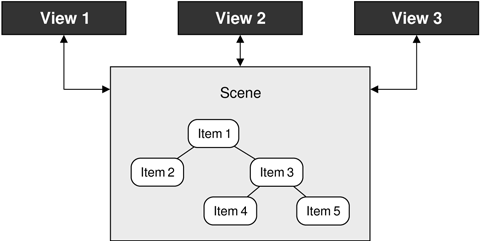
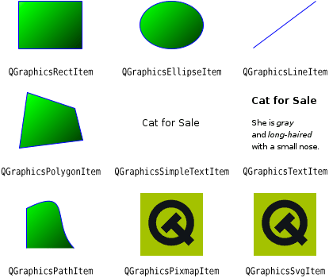

Drawing using QPainter is ideal for custom widgets and for drawing one or just a few items. For graphics in which we need to handle anything from a handful up to tens of thousands of items, and we want the user to be able to click, drag, and select items, Qt's graphics view classes provide the solution we need.
The graphics view architecture consists of a scene, represented by the QGraphicsScene class, and items in the scene, represented by QGraphicsItem subclasses. The scene (along with its item) is made visible to users by showing them in a view, represented by the QGraphicsView class. The same scene can be shown in more than one view—for example, to show different parts of a large scene, or to show the scene under different transformations. This is illustrated schematically in Figure 8.14.

Several predefined QGraphicsItem subclasses are provided, including QGraphicsLineItem, QGraphicsPixmapItem, QGraphicsSimpleTextItem (for styled plain text), and QGraphicsTextItem (for rich text); see Figure 8.15. We can also create our own custom QGraphicsItem subclasses, as we will see later in this section.[*]
[*] Qt 4.4 is expected to support adding widgets to graphics scenes as though they were graphics items, including the ability to apply transformations to them.

A QGraphicsScene holds a collection of graphics items. A scene has three layers: a background layer, an item layer, and a foreground layer. The background and foreground are normally specified by QBrushes, but it is possible to reimplement drawBackground() or drawForeground() for complete control. If we want to use a pixmap as a background, we could simply create a texture QBrush based on that pixmap. The foreground brush could be set to a semi-transparent white to give a faded effect, or to be a cross pattern to provide a grid overlay.
The scene can tell us which items have collided, which are selected, and which are at a particular point or in a particular region. A scene's graphics items are either top-level (the scene is their parent) or children (their parent is another item). Any transformations applied to an item are automatically applied to its children.
The graphics view architecture provides two ways of grouping items. One is to simply make an item a child of another item. Another way is to use a QGraphicsItemGroup. Adding an item to a group does not cause it to be transformed in any way; these groups are convenient for handling multiple items as though they were a single item.
A QGraphicsView is a widget that presents a scene, providing scroll bars if necessary and capable of applying transformations that affect how the scene is rendered. This is useful to support zooming and rotating as aids for viewing the scene.
By default, QGraphicsView renders using Qt's built-in 2D paint engine, but it can be changed to use an OpenGL widget with a single setViewport() call after it has been constructed. It is also easy to print a scene, or parts of a scene, as we will discuss in the next section where we see several techniques for printing using Qt.
The architecture uses three different coordinate systems—viewport coordinates, scene coordinates, and item coordinates—with functions for mapping from one coordinate system to another. Viewport coordinates are coordinates inside the QGraphicsView's viewport. Scene coordinates are logical coordinates that are used for positioning top-level items on the scene. Item coordinates are specific to each item and are centered about an item-local (0, 0) point; these remain unchanged when we move the item on the scene. In practice, we usually only care about the scene coordinates (for positioning top-level items) and item coordinates (for positioning child items and for drawing items). Drawing each item in terms of its own local coordinate system means that we do not have to worry about where an item is in the scene or what transformations have been applied to it.
The graphics view classes are straightforward to use and offer a great deal of functionality. To introduce some of what can be done with them, we will review two examples. The first example is a simple diagram editor, which will show how to create items and how to handle user interaction. The second example is an annotated map program that shows how to handle large numbers of graphics objects and how to render them efficiently at different zoom levels.
The Diagram application shown in Figure 8.16 allows users to create nodes and links. Nodes are graphics items that show plain text inside a rounded rectangle, whereas links are lines that connect pairs of nodes. Nodes that are selected are shown with a dashed outline drawn with a thicker pen than usual. We will begin by looking at links, since they are the simplest, then nodes, and then we will see how they are used in context.
class Link : public QGraphicsLineItem
{
public:
Link(Node *fromNode, Node *toNode);
~Link();
Node *fromNode() const;
Node *toNode() const;
void setColor(const QColor &color);
QColor color() const;
void trackNodes();
private:
Node *myFromNode;
Node *myToNode;
};The Link class is derived from QGraphicsLineItem, which represents a line in a QGraphicsScene. A link has three main attributes: the two nodes it connects and the color used to draw its line. We don't need a QColor member variable to store the color, for reasons that will become apparent shortly. QGraphicsItem is not a QObject subclass, but if we wanted to add signals and slots to Link, there is nothing to stop us from using multiple inheritance with QObject.
The trackNodes() function is used to update the line's endpoints, when the user drags a connected node into a different position.
Link::Link(Node *fromNode, Node *toNode)
{
myFromNode = fromNode;
myToNode = toNode;
myFromNode->addLink(this);
myToNode->addLink(this);
setFlags(QGraphicsItem::ItemIsSelectable);
setZValue(-1);
setColor(Qt::darkRed);
trackNodes();
}When a link is constructed, it adds itself to the nodes it connects. Each node holds a set of links, and can have any number of connecting links. Graphics items have several flags, but in this case we only want links to be selectable so that the user can select and then delete them.
Every graphics item has an (x, y) position, and a z value that specifies how far forward or back it is in the scene. Since we are going to draw our lines from the center of one node to the center of another node, we give the line a negative z value so that it will always be drawn underneath the nodes it connects. As a result, links will appear as lines between the nearest edges of the nodes they connect.
At the end of the constructor, we set an initial line color and then set the line's endpoints by calling trackNodes().
Link::~Link()
{
myFromNode->removeLink(this);
myToNode->removeLink(this);
}When a link is destroyed, it removes itself from the nodes it is connecting.
void Link::setColor(const QColor &color)
{
setPen(QPen(color, 1.0));
}When the link's color is set, we simply change its pen, using the given color and a line width of 1. The setPen() function is inherited from QGraphicsLineItem. The color() getter simply returns the pen's color.
void Link::trackNodes()
{
setLine(QLineF(myFromNode->pos(), myToNode->pos()));
}The QGraphicsItem::pos() function returns the position of its graphics item relative to the scene (for top-level items) or to the parent item (for child items).
For the Link class, we can rely on its base class to handle the painting: QGraphicsLineItem draws a line (using pen()) between two points in the scene.
For the Node class, we will handle all the graphics ourselves. Another difference between nodes and links is that nodes are more interactive. We will begin by reviewing the Node declaration, breaking it into a few pieces since it is quite long.
class Node : public QGraphicsItem
{
Q_DECLARE_TR_FUNCTIONS(Node)
public:
Node();For the Node class, we use QGraphicsItem as the base class. The Q_DECLARE_TR_FUNCTIONS() macro is used to add a tr() function to this class, even though it is not a QObject subclass. This is simply a convenience that allows us to use tr() rather than the static QObject::tr() or QCoreApplication::translate().
void setText(const QString &text);
QString text() const;
void setTextColor(const QColor &color);
QColor textColor() const;
void setOutlineColor(const QColor &color);
QColor outlineColor() const;
void setBackgroundColor(const QColor &color);
QColor backgroundColor() const;These functions are simply getters and setters for the private members. We provide control of the color of the text, the node's outline, and the node's background.
void addLink(Link *link);
void removeLink(Link *link);As we saw earlier, these functions are called by the Link class to add or remove themselves from a node.
QRectF boundingRect() const;
QPainterPath shape() const;
void paint(QPainter *painter,
const QStyleOptionGraphicsItem *option, QWidget *widget);When we create QGraphicsItem subclasses that we want to draw manually, we normally reimplement boundingRect() and paint(). If we don't reimplement shape(), the base class implementation will fall back on the boundingRect(). In this case, we have reimplemented shape() to return a more accurate shape that takes into account the node's rounded corners.
The graphics view architecture uses the bounding rectangle to determine whether an item needs to be drawn. This enables QGraphicsView to display arbitrarily large scenes very quickly, when only a fraction of the items are visible at any given time. The shape is used for determining whether a point is inside an item, or whether two items collide.
protected:
void mouseDoubleClickEvent(QGraphicsSceneMouseEvent *event);
QVariant itemChange(GraphicsItemChange change,
const QVariant &value);In the Diagram application, we will provide a Properties dialog for editing a node's position, colors, and text. As an added convenience, we will let the user change the text by double-clicking the node.
If a node is moved, we must make sure that any associated links are updated accordingly. We reimplement the itemChange() handler to take care of this; it is called whenever the item's properties (including its position) change. The reason we don't use mouseMoveEvent() for this purpose is because it is not called when the node is moved programmatically.
private:
QRectF outlineRect() const;
int roundness(double size) const;
QSet<Link *> myLinks;
QString myText;
QColor myTextColor;
QColor myBackgroundColor;
QColor myOutlineColor;
};The outlineRect() private function returns the rectangle drawn by the Node, whereas roundness() returns an appropriate roundness coefficient based on the width or height of the rectangle.
Just as a Link keeps track of the nodes it connects, a Node keeps track of its links. When a node is deleted, all the links associated with the node are deleted as well.
We are now ready to look at Node's implementation, starting as usual with the constructor.
Node::Node()
{
myTextColor = Qt::darkGreen;
myOutlineColor = Qt::darkBlue;
myBackgroundColor = Qt::white;
setFlags(ItemIsMovable | ItemIsSelectable);
}We initialize the colors, and make node items both movable and selectable. The z value will default to 0, and we leave the node's position in the scene to be set by the caller.
Node::~Node()
{
foreach (Link *link, myLinks)
delete link;
}The destructor deletes all the node's links. Whenever a link is destroyed, it removes itself from the nodes it is connected to. We iterate over (a copy of) the set of links rather than use qDeleteAll() to avoid side effects, since the set of links is indirectly accessed by the Link destructor.
void Node::setText(const QString &text)
{
prepareGeometryChange();
myText = text;
update();
}Whenever we change a graphics item in a way that affects its appearance, we must call update() to schedule a repaint. And in cases such as this where the item's bounding rectangle might change (because the new text might be shorter or longer than the current text), we must call prepareGeometryChange() immediately before doing anything that will affect the item's bounding rectangle.
We will skip the text(), textColor(), outlineColor(), and backgroundColor() getters since they simply return their corresponding private member.
void Node::setTextColor(const QColor &color)
{
myTextColor = color;
update();
}When we set the text's color, we must call update() to schedule a repaint so that the item is painted using the new color. We don't need to call prepareGeometryChange(), because the size of the item is not affected by a color change. We will omit the setters for the outline and background colors since they are structurally the same as this setter.
void Node::addLink(Link *link)
{
myLinks.insert(link);
}
void Node::removeLink(Link *link)
{
myLinks.remove(link);
}Here we simply add or remove the given link to the node's set of links.
QRectF Node::outlineRect() const
{
const int Padding = 8;
QFontMetricsF metrics = qApp->font();
QRectF rect = metrics.boundingRect(myText);
rect.adjust(-Padding, -Padding, +Padding, +Padding);
rect.translate(-rect.center());
return rect;
}We use this private function to calculate a rectangle that encompasses the node's text with an 8-pixel margin. The bounding rectangle returned by the font metrics function always has (0, 0) as its top-left corner. Since we want the text centered on the item's center point, we translate the rectangle so that its center is at (0, 0).
Although we think and calculate in terms of pixels, the unit is in a sense notional. The scene (or the parent item) may be scaled, rotated, sheared, or simply affected by antialiasing, so the actual number of pixels that appears on the screen may be different.
QRectF Node::boundingRect() const
{
const int Margin = 1;
return outlineRect().adjusted(-Margin, -Margin, +Margin, +Margin);
}The boundingRect() function is called by QGraphicsView to determine whether the item needs to be drawn. We use the outline rectangle, but with a bit of additional margin, since the rectangle we return from this function must allow for at least half the width of the pen if an outline is going to be drawn.
QPainterPath Node::shape() const
{
QRectF rect = outlineRect();
QPainterPath path;
path.addRoundRect(rect, roundness(rect.width()),
roundness(rect.height()));
return path;
}The shape() function is called by QGraphicsView for fine-grained collision detection. Often, we can omit it and leave the item to calculate the shape itself based on the bounding rectangle. Here we reimplement it to return a QPainterPath that represents a rounded rectangle. As a consequence, clicking the corner areas that fall outside the rounded rectangle but inside the bounding rectangle won't select the item.
When we create a rounded rectangle, we can pass optional arguments to specify the roundedness of the corners. We calculate suitable values using the roundness() private function.
void Node::paint(QPainter *painter,
const QStyleOptionGraphicsItem *option,
QWidget * /* widget */)
{
QPen pen(myOutlineColor);
if (option->state & QStyle::State_Selected) {
pen.setStyle(Qt::DotLine);
pen.setWidth(2);
}
painter->setPen(pen);
painter->setBrush(myBackgroundColor);
QRectF rect = outlineRect();
painter->drawRoundRect(rect, roundness(rect.width()),
roundness(rect.height()));
painter->setPen(myTextColor);
painter->drawText(rect, Qt::AlignCenter, myText);
}The paint() function is where we draw the item. If the item is selected, we change the pen's style to be a dotted line and make it thicker; otherwise, the default of a solid 1-pixel line is used. We also set the brush to use the background color.
Then we draw a rounded rectangle the same size as the outline rectangle, but using the rounding factors returned by the roundness() private function. Finally, we draw the text centered within the outline rectangle on top of the rounded rectangle.
The option parameter of type QStyleOptionGraphicsItem is an unusual class for Qt because it provides several public member variables. These include the current layout direction, font metrics, palette, rectangle, state (selected, "has focus", and many others), the transformation matrix, and the level of detail. Here we have checked the state member to see whether the node is selected.
QVariant Node::itemChange(GraphicsItemChange change,
const QVariant &value)
{
if (change == ItemPositionHasChanged) {
foreach (Link *link, myLinks)
link->trackNodes();
}
return QGraphicsItem::itemChange(change, value);
}Whenever the user drags a node, the itemChange() handler is called with ItemPositionHasChanged as the first argument. To ensure that the link lines are positioned correctly, we iterate over the node's set of links and tell each one to update its line's endpoints. At the end, we call the base class implementation to ensure that it also gets notified.
void Node::mouseDoubleClickEvent(QGraphicsSceneMouseEvent *event)
{
QString text = QInputDialog::getText(event->widget(),
tr("Edit Text"), tr("Enter new text:"),
QLineEdit::Normal, myText);
if (!text.isEmpty())
setText(text);
}If the user double-clicks the node, we pop up a dialog that shows the current text and allows them to change it. If the user clicks Cancel, an empty string is returned; therefore, we apply the change only if the string is non-empty. We will see how other node properties (such as the node's colors) can be changed shortly.
int Node::roundness(double size) const
{
const int Diameter = 12;
return 100 * Diameter / int(size);
}The roundness() function returns appropriate rounding factors to ensure that the node's corners are quarter-circles with diameter 12. The rounding factors must be in the range 0 (square) to 99 (fully rounded).
We have now seen the implementation of two custom graphics item classes. Now it is time to see how they are actually used. The Diagram application is a standard main window application with menus and a toolbar. We won't look at all the details of the implementation, but instead concentrate on those relevant to the graphics view architecture. We will begin by looking at an extract from the QMainWindow subclass's definition.
class DiagramWindow : public QMainWindow
{
Q_OBJECT
public:
DiagramWindow();
private slots:
void addNode();
void addLink();
void del();
void cut();
void copy();
void paste();
void bringToFront();
void sendToBack();
void properties();
void updateActions();
private:
typedef QPair<Node *, Node *> NodePair;
void createActions();
void createMenus();
void createToolBars();
void setZValue(int z);
void setupNode(Node *node);
Node *selectedNode() const;
Link *selectedLink() const;
NodePair selectedNodePair() const;
QMenu *fileMenu;
QMenu *editMenu;
QToolBar *editToolBar;
QAction *exitAction;
...
QAction *propertiesAction;
QGraphicsScene *scene;
QGraphicsView *view;
int minZ;
int maxZ;
int seqNumber;
};
The purpose of most of the private slots should be clear from their names. The properties() slot is used to pop up the Properties dialog if a node is selected, or a QColorDialog if a link is selected. The updateActions() slot is used to enable or disable actions depending on what items are selected.
DiagramWindow::DiagramWindow()
{
scene = new QGraphicsScene(0, 0, 600, 500);
view = new QGraphicsView;
view->setScene(scene);
view->setDragMode(QGraphicsView::RubberBandDrag);
view->setRenderHints(QPainter::Antialiasing
| QPainter::TextAntialiasing);
view->setContextMenuPolicy(Qt::ActionsContextMenu);
setCentralWidget(view);
minZ = 0;
maxZ = 0;
seqNumber = 0;
createActions();
createMenus();
createToolBars();
connect(scene, SIGNAL(selectionChanged()),
this, SLOT(updateActions()));
setWindowTitle(tr("Diagram"));
updateActions();
}We begin by creating a graphics scene, with an origin of (0, 0), a width of 600, and a height of 500. Then we create a graphics view to visualize the scene. In the next example, instead of using QGraphicsView directly, we will subclass it to customize its behavior.
Selectable items can be selected by clicking them. To select more than one item at a time, the user can click the items while pressing Ctrl. Setting the drag mode to QGraphicsView::RubberBandDrag means that the user can also select items by dragging a rubber band over them.
The minZ and maxZ numbers are used by the sendToBack() and bringToFront() functions. The sequence number is used to give a unique initial text to each node the user adds.
The signal–slot connection ensures that whenever the scene's selection changes, we enable or disable the application's actions so that only actions that make sense are available. We call updateActions() to set the actions' initial enabled states.
void DiagramWindow::addNode()
{
Node *node = new Node;
node->setText(tr("Node %1").arg(seqNumber + 1));
setupNode(node);
}When the user adds a new node, we create a new instance of the Node class, give it a default text, and then pass the node to setupNode() to position and select it. We use a separate function to finish adding a node because we will need this functionality again when implementing paste().
void DiagramWindow::setupNode(Node *node)
{
node->setPos(QPoint(80 + (100 * (seqNumber % 5)),
80 + (50 * ((seqNumber / 5) % 7))));
scene->addItem(node);
++seqNumber;
scene->clearSelection();
node->setSelected(true);
bringToFront();
}This function positions a newly added or pasted node in the scene. The use of the sequence number ensures that new nodes are added in different positions rather than on top of each other. We clear the current selection and select just the newly added node. The bringToFront() call ensures that the new node is farther forward than any other node.
void DiagramWindow::bringToFront()
{
++maxZ;
setZValue(maxZ);
}
void DiagramWindow::sendToBack()
{
--minZ;
setZValue(minZ);
}
void DiagramWindow::setZValue(int z)
{
Node *node = selectedNode();
if (node)
node->setZValue(z);
}The bringToFront() slot increments the maxZ value, and then sets the currently selected node's z value to maxZ. The sendToBack() slot uses minZ and has the opposite effect. Both are defined in terms of the setZValue() private function.
Node *DiagramWindow::selectedNode() const
{
QList<QGraphicsItem *> items = scene->selectedItems();
if (items.count() == 1) {
return dynamic_cast<Node *>(items.first());
} else {
return 0;
}
}The list of all selected items in the scene is available by calling QGraphicsScene::selectedItems(). The selectedNode() function is designed to return a single node if just one node is selected, and a null pointer otherwise. If there is exactly one selected item, the cast will produce a Node pointer if the item is a Node, and a null pointer if the item is a Link.
There is also a selectedLink() function, which returns a pointer to the selected Link item if there is exactly one selected item and it is a link.
void DiagramWindow::addLink()
{
NodePair nodes = selectedNodePair();
if (nodes == NodePair())
return;
Link *link = new Link(nodes.first, nodes.second);
scene->addItem(link);
}The user can add a link if exactly two nodes are selected. If the selectedNodePair() function returns the two selected nodes, we create a new link. The link's constructor will make the link line's endpoints go from the center of the first node to the center of the second node.
DiagramWindow::NodePair DiagramWindow::selectedNodePair() const
{
QList<QGraphicsItem *> items = scene->selectedItems();
if (items.count() == 2) {
Node *first = dynamic_cast<Node *>(items.first());
Node *second = dynamic_cast<Node *>(items.last());
if (first && second)
return NodePair(first, second);
}
return NodePair();
}This function is similar to the selectedNode() function we saw earlier. If there are exactly two selected items, and they are both nodes, the pair of them is returned; otherwise, a pair of null pointers is returned.
void DiagramWindow::del()
{
QList<QGraphicsItem *> items = scene->selectedItems();
QMutableListIterator<QGraphicsItem *> i(items);
while (i.hasNext()) {
Link *link = dynamic_cast<Link *>(i.next());
if (link) {
delete link;
i.remove();
}
}
qDeleteAll(items);
}This slot deletes any selected items, whether they are nodes, links, or a mixture of both. When a node is deleted, its destructor deletes any links that are associated with it. To avoid double-deleting links, we delete the link items before deleting the nodes.
void DiagramWindow::properties()
{
Node *node = selectedNode();
Link *link = selectedLink();
if (node) {
PropertiesDialog dialog(node, this);
dialog.exec();
} else if (link) {
QColor color = QColorDialog::getColor(link->color(), this);
if (color.isValid())
link->setColor(color);
}
}If the user triggers the Properties action and a node is selected, we invoke the Properties dialog. This dialog allows the user to change the node's text, position, and colors. Because PropertiesDialog operates directly on a Node pointer, we can simply execute it modally and leave it to take care of itself.
If a link is selected, we use Qt's built-in QColorDialog::getColor() static convenience function to pop up a color dialog. If the user chooses a color, we set that as the link's color.
If a node's properties or a link's color were changed, the changes are made through setter functions, and these call update() to ensure that the node or link is repainted with its new settings.
Users often want to cut, copy, and paste graphics items in this type of application, and one way to support this is to represent items textually, as we will see when we review the relevant code. We only handle nodes, because it would not make sense to copy or paste links, which only exist in relation to nodes.
void DiagramWindow::cut()
{
Node *node = selectedNode();
if (!node)
return;
copy();
delete node;
}The Cut action is a two-part process: Copy the selected item into the clipboard and delete the item. The copy is performed using the copy() slot associated with the Copy action, and the deletion uses C++'s standard delete operator, relying on the node's destructor to delete any links that are connected to the node and to remove the node from the scene.
void DiagramWindow::copy()
{
Node *node = selectedNode();
if (!node)
return;
QString str = QString("Node %1 %2 %3 %4")
.arg(node->textColor().name())
.arg(node->outlineColor().name())
.arg(node->backgroundColor().name())
.arg(node->text());
QApplication::clipboard()->setText(str);
}The QColor::name() function returns a QString that contains an HTML-style color string in "#RRGGBB" format, with each color component represented by a hexadecimal value in the range 0x00 to 0xFF (0 to 255). We write a string to the clipboard, which is a single line of text starting with the word "Node", then the node's three colors, and finally the node's text, with a space between each part. For example:
Node #aa0000 #000080 #ffffff Red herring
This text is decoded by the paste() function:
void DiagramWindow::paste()
{
QString str = QApplication::clipboard()->text();
QStringList parts = str.split(" ");
if (parts.count() >= 5 && parts.first() == "Node") {
Node *node = new Node;
node->setText(QStringList(parts.mid(4)).join(" "));
node->setTextColor(QColor(parts[1]));
node->setOutlineColor(QColor(parts[2]));
node->setBackgroundColor(QColor(parts[3]));
setupNode(node);
}
}We split the clipboard's text into a QStringList. Using the preceding example, this would give us the list ["Node", "#aa0000", "#000080", "#ffffff", "Red", "herring"]. To be a valid node, there must be at least five elements in the list: the word "Node", the three colors, and at least one word of text. If this is the case, we create a new node, setting its text to be the space-separated concatenation of the fifth and subsequent elements. We set the colors to be the second, third, and fourth elements, using the QColor constructor that accepts the names returned by QColor::name().
For completeness, here is the updateActions() slot that is used to enable and disable the actions in the Edit menu and the context menu:
void DiagramWindow::updateActions()
{
bool hasSelection = !scene->selectedItems().isEmpty();
bool isNode = (selectedNode() != 0);
bool isNodePair = (selectedNodePair() != NodePair());
cutAction->setEnabled(isNode);
copyAction->setEnabled(isNode);
addLinkAction->setEnabled(isNodePair);
deleteAction->setEnabled(hasSelection);
bringToFrontAction->setEnabled(isNode);
sendToBackAction->setEnabled(isNode);
propertiesAction->setEnabled(isNode);
foreach (QAction *action, view->actions())
view->removeAction(action);
foreach (QAction *action, editMenu->actions()) {
if (action->isEnabled())
view->addAction(action);
}
}We have now finished the review of the Diagram application and can turn our attention to the second graphics view example, Cityscape.
The Cityscape application shown in Figure 8.17 presents a fictitious map of the major buildings, blocks, and parks in a city, with the most important ones annotated with their names. It allows the user to scroll and zoom the map using the mouse and the keyboard. We will begin by showing the Cityscape class, which provides the application's main window.
class Cityscape : public QMainWindow
{
Q_OBJECT
public:
Cityscape();
private:
void generateCityBlocks();
QGraphicsScene *scene;
CityView *view;
};The application has no menus or toolbars; it simply displays the annotated map using a CityView widget. The CityView class is derived from QGraphicsView.
Cityscape::Cityscape()
{
scene = new QGraphicsScene(-22.25, -22.25, 1980, 1980);
scene->setBackgroundBrush(QColor(255, 255, 238));
generateCityBlocks();
view = new CityView;
view->setScene(scene);
setCentralWidget(view);
setWindowTitle(tr("Cityscape"));
}The constructor creates a QGraphicsScene and calls generateCityBlocks() to generate a map. The map consists of about 2000 blocks and 200 annotations.
We will first look at the CityBlock graphics item subclass, then the Annotation graphics item subclass, and finally the CityView graphics view subclass.
class CityBlock : public QGraphicsItem
{
public:
enum Kind { Park, SmallBuilding, Hospital, Hall, Building, Tower,
LShapedBlock, LShapedBlockPlusSmallBlock, TwoBlocks,
BlockPlusTwoSmallBlocks };
CityBlock(Kind kind);
QRectF boundingRect() const;
void paint(QPainter *painter,
const QStyleOptionGraphicsItem *option, QWidget *widget);
private:
int kind;
QColor color;
QPainterPath shape;
};A city block has a kind, a color, and a shape. Since the city blocks are not selectable, we have not bothered to reimplement the shape() function like we did for the Node class in the previous example.
CityBlock::CityBlock(Kind kind)
{
this->kind = kind;
int green = 96 + (std::rand() % 64);
int red = 16 + green + (std::rand() % 64);
int blue = 16 + (std::rand() % green);
color = QColor(red, green, blue);
if (kind == Park) {
color = QColor(192 + (std::rand() % 32), 255,
192 + (std::rand() % 16));
shape.addRect(boundingRect());
} else if (kind == SmallBuilding) {
...
} else if (kind == BlockPlusTwoSmallBlocks) {
int w1 = (std::rand() % 10) + 8;
int h1 = (std::rand() % 28) + 8;
int w2 = (std::rand() % 10) + 8;
int h2 = (std::rand() % 10) + 8;
int w3 = (std::rand() % 6) + 8;
int h3 = (std::rand() % 6) + 8;
int y = (std::rand() % 4) - 16;
shape.addRect(QRectF(-16, -16, w1, h1));
shape.addRect(QRectF(-16 + w1 + 4, y, w2, h2));
shape.addRect(QRectF(-16 + w1 + 4,
y + h2 + 4 + (std::rand() % 4), w3, h3));
}
}
The constructor sets a random color and generates a suitable QPainterPath depending on what kind of block the node represents.
QRectF CityBlock::boundingRect() const
{
return QRectF(-20, -20, 40, 40);
}Each block occupies a 40 x 40 square, with its center at (0, 0).
void CityBlock::paint(QPainter *painter,
const QStyleOptionGraphicsItem *option,
QWidget * /* widget */)
{
if (option->levelOfDetail < 4.0) {
painter->fillPath(shape, color);
} else {
QLinearGradient gradient(QPoint(-20, -20), QPoint(+20, +20));
int coeff = 105 + int(std::log(option->levelOfDetail - 4.0));
gradient.setColorAt(0.0, color.lighter(coeff));
gradient.setColorAt(1.0, color.darker(coeff));
painter->fillPath(shape, gradient);
}
}In paint(), we draw the shape using the given QPainter. We distinguish two cases:
If the zoom factor is less than 4.0, we use a solid color to fill the shape.
If the zoom factor is 4.0 or more, we use a QLinearGradient to fill the shape to give a subtle lighting effect.
The levelOfDetail member of the QStyleOptionGraphicsItem class stores a floating-point value that tells us what the zoom factor is. A value of 1.0 means that the scene is being viewed at its natural size, a value of 0.5 means that the scene has been zoomed out to half its natural size, and a value of 2.5 means that the scene has been zoomed in to two and a half times its natural size. Using the "level of detail" information allows us to use faster drawing algorithms for scenes that are zoomed out too much to show any detail.
The CityBlock graphics item class works perfectly, but the fact that the items are scaled when the scene is zoomed raises the question of what happens to items that draw text. Normally, we don't want the text to scale with the scene. The graphics view architecture provide a general solution to this problem, through the ItemIgnoresTransformations flag. This is what we use in the Annotation class:
class Annotation : public QGraphicsItem
{
public:
Annotation(const QString &text, bool major = false);
void setText(const QString &text);
QString text() const;
QRectF boundingRect() const;
void paint(QPainter *painter,
const QStyleOptionGraphicsItem *option, QWidget *widget);
private:
QFont font;
QString str;
bool major;
double threshold;
int y;
};The constructor takes a text and a bool flag, called major, that specifies whether the annotation is a major or a minor annotation. This will affect the size of the font.
Annotation::Annotation(const QString &text, bool major)
{
font = qApp->font();
font.setBold(true);
if (major) {
font.setPointSize(font.pointSize() + 2);
font.setStretch(QFont::SemiExpanded);
}
if (major) {
threshold = 0.01 * (40 + (std::rand() % 40));
} else {
threshold = 0.01 * (100 + (std::rand() % 100));
}
str = text;
this->major = major;
y = 20 - (std::rand() % 40);
setZValue(1000);
setFlag(ItemIgnoresTransformations, true);
}In the constructor, we begin by setting the font to be bigger and bolder if this is a major annotation, presumably one that refers to an important building or landmark. The threshold below which the annotation will not be shown is calculated pseudo-randomly, with a lower threshold for major annotations, so less important ones will disappear first as the scene is zoomed out.
The z value is set to 1000 to ensure that annotations are on top of everything else, and we use the ItemIgnoresTransformations flag to ensure that the annotation does not change size no matter how much the scene is zoomed.
void Annotation::setText(const QString &text)
{
prepareGeometryChange();
str = text;
update();
}If the annotation's text is changed, it might be longer or shorter than before, so we must notify the graphics view architecture that the item's geometry may change.
QRectF Annotation::boundingRect() const
{
QFontMetricsF metrics(font);
QRectF rect = metrics.boundingRect(str);
rect.moveCenter(QPointF(0, y));
rect.adjust(-4, 0, +4, 0);
return rect;
}We get the font metrics for the annotation's font, and use them to calculate the text's bounding rectangle. We then move the rectangle's center point to the annotation's y offset, and make the rectangle slightly wider. The extra pixels on the left and right sides of the bounding rectangle will give the text some margin from the edges.
void Annotation::paint(QPainter *painter,
const QStyleOptionGraphicsItem *option,
QWidget * /* widget */)
{
if (option->levelOfDetail <= threshold)
return;
painter->setFont(font);
QRectF rect = boundingRect();
int alpha = int(30 * std::log(option->levelOfDetail));
if (alpha >= 32)
painter->fillRect(rect, QColor(255, 255, 255, qMin(alpha, 63)));
painter->setPen(Qt::white);
painter->drawText(rect.translated(+1, +1), str,
QTextOption(Qt::AlignCenter));
painter->setPen(Qt::blue);
painter->drawText(rect, str, QTextOption(Qt::AlignCenter));
}If the scene is zoomed out beyond the annotation's threshold, we don't paint the annotation at all. And if the scene is zoomed in sufficiently, we start by painting a semi-transparent white rectangle; this helps the text stand out when drawn on top of a dark block.
We draw the text twice, once in white and once in blue. The white text is offset by one pixel horizontally and vertically to create a shadow effect that makes the text easier to read.
Having seen how the blocks and annotations are done, we can now move on to the last aspect of the Cityscape application, the custom QGraphicsView subclass:
class CityView : public QGraphicsView
{
Q_OBJECT
public:
CityView(QWidget *parent = 0);
protected:
void wheelEvent(QWheelEvent *event);
};By default, the QGraphicsView class provides scroll bars that appear automatically when needed, but does not provide any means of zooming the scene it is being used to view. For this reason, we have created the tiny CityView subclass to provide the user with the ability to zoom in and out using the mouse wheel.
CityView::CityView(QWidget *parent)
: QGraphicsView(parent)
{
setDragMode(ScrollHandDrag);
}Setting the drag mode is all that is required to support scrolling by dragging.
void CityView::wheelEvent(QWheelEvent *event)
{
double numDegrees = -event->delta() / 8.0;
double numSteps = numDegrees / 15.0;
double factor = std::pow(1.125, numSteps);
scale(factor, factor);
}When the user rolls the mouse wheel, wheel events are generated; we simply have to calculate an appropriate scaling factor and call QGraphicsView::scale(). The mathematical formula is a bit tricky, but basically we scale the scene up or down by a factor of 1.125 for every mouse wheel step.
That completes our two graphics view examples. Qt's graphics view architecture is very rich, so bear in mind that it has a lot more to offer than we have had the space to cover. There is support for drag and drop, and graphics items can have tooltips and custom cursors. Animation effects can be achieved in a number of ways—for example, by associating QGraphicsItemAnimations with the items that we want to animate and performing the animation using a QTimeLine. It is also possible to achieve animation by creating custom graphics item subclasses that are derived from QObject (through multiple inheritance) and that reimplement QObject::timerEvent().